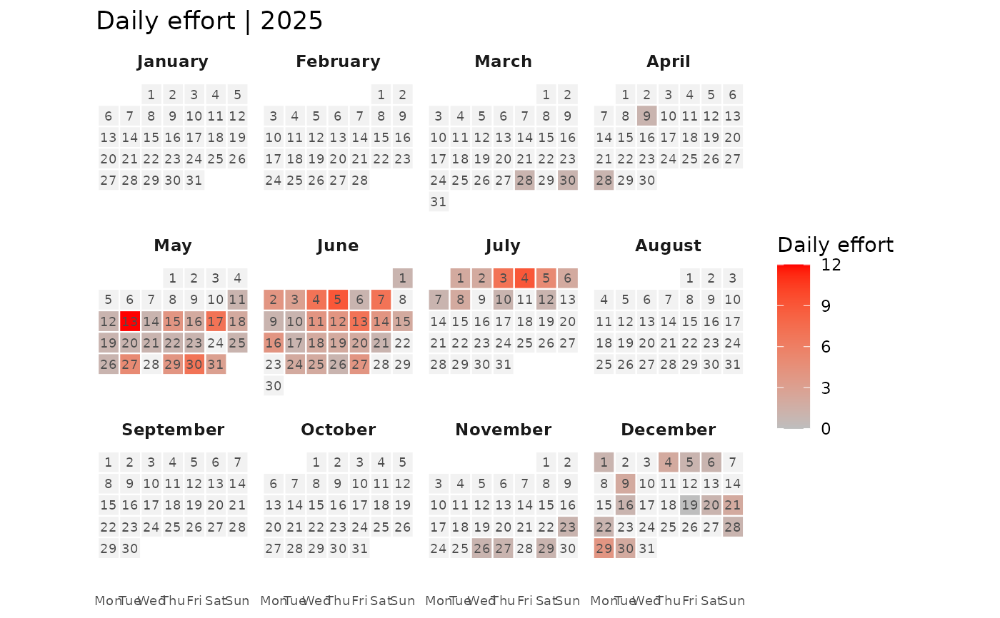

Plot a calendar heatmap of daily camera trap activity
Source:R/ct_plot_calendar.R
ct_plot_calendar.RdVisualises a year of camera-trap records as a calendar heatmap. Tiles are shaded by the number of records per day, or by the summed value of a chosen column. A count distribution can optionally be fitted to the daily values and used for the shading.
Usage
ct_plot_calendar(
data,
datetime,
format = NULL,
size_column = NULL,
only_month = NULL,
fit_distribution = FALSE,
abbreviate_month_name = FALSE,
month_name = NULL,
day_name = NULL,
number_of_column = 4,
low = NULL,
high = NULL,
palette = NULL,
na_value = "grey95",
show_day_number = TRUE,
title = NULL
)Arguments
- data
A data frame of records, one row per detection.
- datetime
Column holding the date or date-time of each record.
- format
Optional date format(s) passed to
as.Date()viatryFormats. IfNULL(default), a set of common date and date-time formats is tried.- size_column
Optional column whose values are summed per day, for example the number of individuals recorded in each detection. If omitted, the number of records (detections) per day is used instead.
- only_month
Optional integer vector of month numbers (1 to 12) to keep, for example
3:5. Records outside these months are dropped and only those month panels are drawn. DefaultNULL(the whole year).- fit_distribution
Logical. If
TRUE, a count distribution is fitted to the records per day over the displayed period (days with no record count as zeros) withct_fit_distribution(), and the fitted distribution is reported in the plot subtitle. Tiles are then shaded by the fitted density, that is the probability of each day's count under the model. The calendar therefore becomes a typicality map, not an activity map: the brightest tiles are the most probable days under the fitted distribution, which for zero-heavy camera-trap data are usually the days with no detection, while busier days carry rarer counts and appear darker. See Details. DefaultFALSE.- abbreviate_month_name
Logical. Use three-letter month names. Ignored when
month_nameis supplied. DefaultFALSE.- month_name
Optional length-12 character vector of month labels, for localisation. Defaults to the English month names.
- day_name
Optional length-7 character vector of weekday labels, Monday first. Defaults to
c("Mon", "Tue", "Wed", "Thu", "Fri", "Sat", "Sun").- number_of_column
Number of month panels per row. Default
4.- low, high
Optional start and end colours for a two-colour gradient fill. When both are supplied they override
palette.- palette
Optional fill palette. Either a single viridis option letter (for example
"C"), or a vector of two or more colours for a custom gradient. DefaultNULL(viridis option C).- na_value
Fill colour for days with no records. Default
"grey95".- show_day_number
Logical. Print the day number inside each tile. Default
TRUE.- title
Optional plot title. Generated automatically when
NULL.
Value
A ggplot2::ggplot object.
Details
With fit_distribution = FALSE the calendar is an activity map: tiles are
shaded by the records per day (or the summed size_column), so busier days
are brighter.
With fit_distribution = TRUE the calendar is instead a typicality map. A
single distribution is fitted to the whole displayed period, and each tile is
shaded by the fitted probability of that day's count. Because most days have
no detection, the count of zero is the most probable value, so empty days
receive the highest density and the brightest colour, while the rarer busy
days appear darker. The map highlights how typical or
unusual each day is under the model, rather than how much activity occurred.
Use fit_distribution = FALSE if you want activity intensity instead.
Examples
library(dplyr)
data(ACBR)
# The calendar covers one year at a time, so keep a single year.
d2024 <- ACBR$acbr_data %>%
# Filter to independent (10min separated) detections
ct_independence(species_column = species,
datetime = datetime,
format = "%Y-%m-%d %H:%M:%S",
threshold = 10*60
) %>%
# Select data for 2025 year
filter(lubridate::year(datetime) == 2025)
ct_plot_calendar(d2024, datetime = datetime,
size_column = count,
low = "gray", high = "red"
)

#'